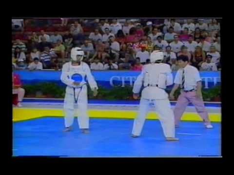
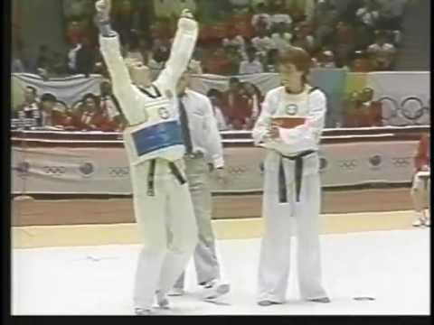
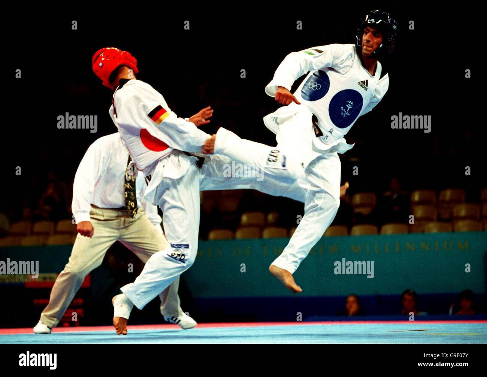
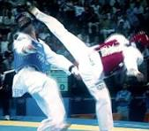
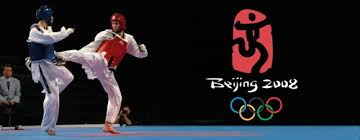
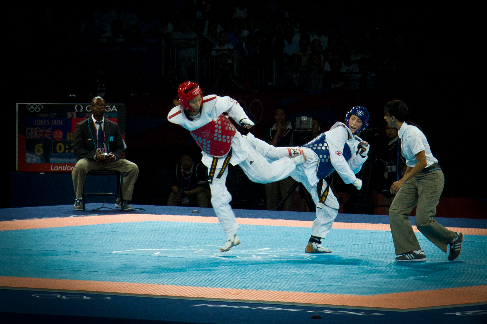

Vision, Mission, Stratergy
9   
1988 summer olympic won
by south koria
1992 summer olympic won by Spain
2000 summer olympic won by Australia  
2004 summer olympic won by Greece
2008 summer olympic won by china
2012 summer olympic won by united kingdom
histroy
Taekwondo is a Korean martial art characterized by its emphasis on kicking techniques, which distinguishes it from other martial arts like Karate. The roots of Taekwondo can be traced back to ancient Korean martial arts such as Taekkyon and Subak, which date back over 2,000 years. read more
Best Taekwondo Knokuots in Taekwando histroy 😨